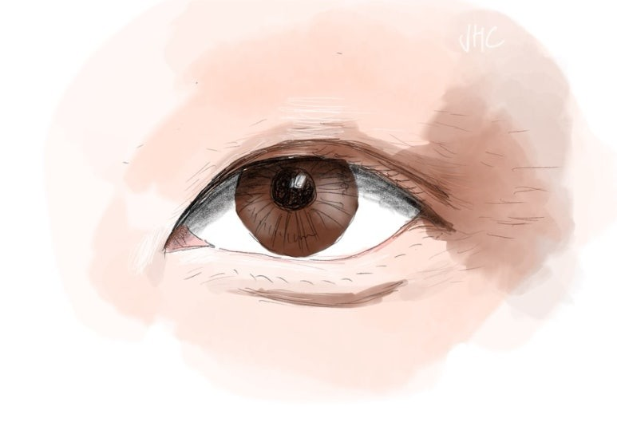
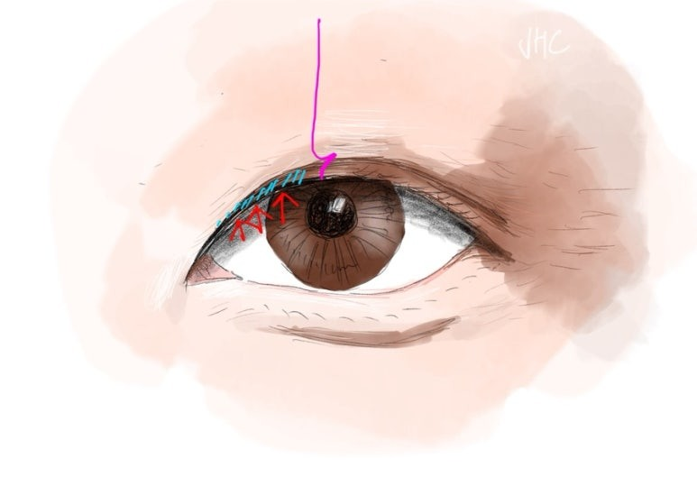
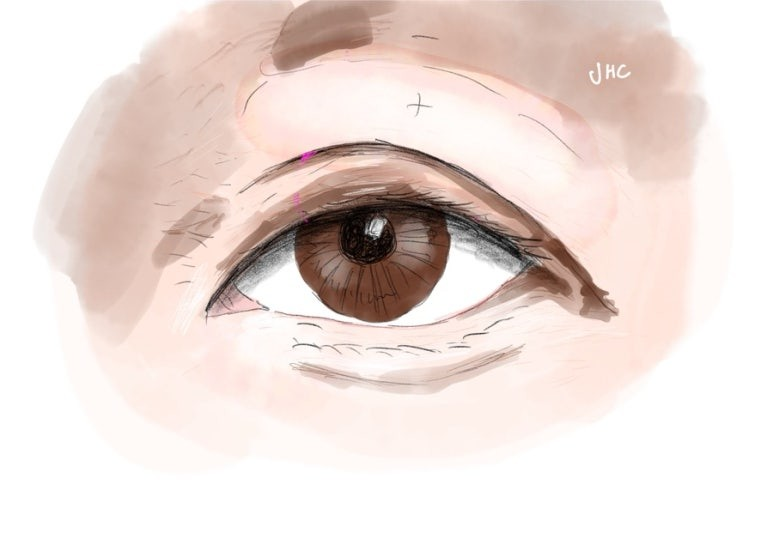
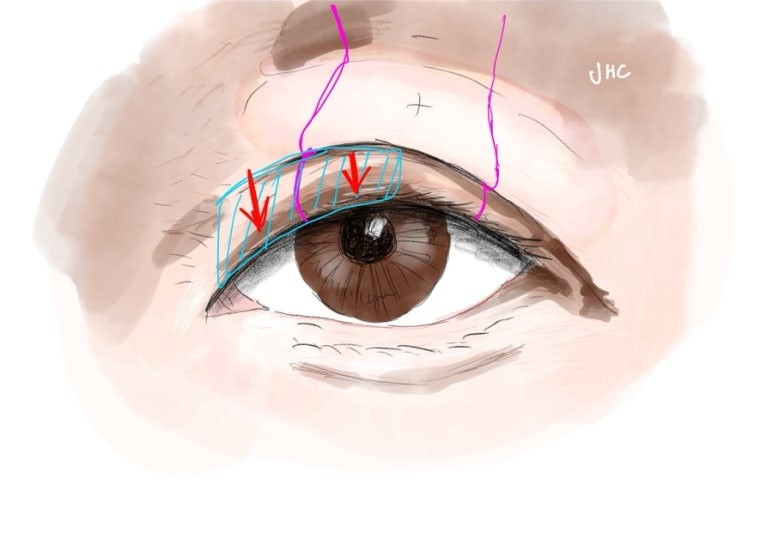
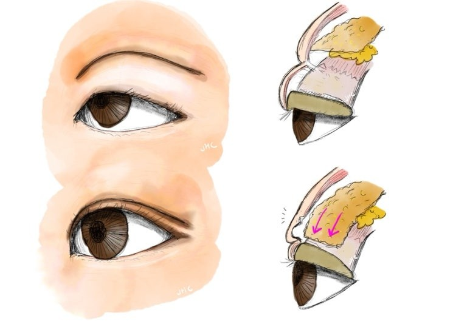

어떤 얼굴, 어떤 눈에도 자연스럽게 잘 어울리는 쌍꺼풀을 들자면 "얇은 인아웃라인"이라고 말할 수 있습니다.

첫 쌍꺼풀수술을 할때도, 아니면 두껍게 수술이 되버려 재수술을 해야 할때도, 얇은 인아웃라인을 일단 제안하고 그 지점에서부터 논의를 시작합니다.

제가 기준 삼는 얇은 인아웃 라인의 정의는, 볼륨감이 없이 얇게 시작하는 앞머리가 중요합니다.
그래야 눈이 졸려보이지 않고 또렷하면서, 성형한 티가 안나고 자연스럽기 때문입니다.
한마디로, 호불호가 적은 눈이 됩니다.
반대로, 앞머리가 두꺼운 눈을 그림으로 보여드리겠습니다.

쌍꺼풀이 두껍게 수술된, 소시지 쌍꺼풀인 경우에 앞머리가 이 그림처럼 두꺼워지기 쉬운데, 그 이유는 동양인의 눈은, 눈을 뜨게 하는 안검거근의 기능이 앞머리쪽, 즉 내측일수록 약하고 엉성하기 때문입니다.

그래서 이런 눈일수록 앞쪽과 뒤쪽의 속눈썹 각도가 어색하게 차이가 많이 나고, 눈도 힘들게 떠지는 등 여러 어색한 문제와 수술한 티가 많이 나는 모양이 되게 됩니다.

수술로 이러한 눈이 되었다면, 얇은 인아웃라인을 만들기 위해서 적절한 라인낮추기 재수술이 필수적입니다.